Classes | |
| struct | DiagnosticDescriptor |
| struct | SampledBracket |
| struct | SampledWindSources |
| struct | SelectedSurfacePrecipAccumulationComponents |
| struct | SampledFieldDescriptor |
| struct | SampledFieldSelection |
| struct | SampledVerticalCoordinateMetadata |
| struct | SampledLevelMetadata |
| struct | Plotfile2DOutputDescriptor |
| struct | SampledLevelDefinition |
| struct | PlotVariableSelection |
| struct | WaterPathDescriptor |
| struct | SelectedWaterPathComponents |
Functions | |
| const amrex::Vector< DiagnosticDescriptor > & | diagnostic_catalog () |
| amrex::Vector< std::string > | diagnostic_names () |
| const DiagnosticDescriptor * | find_diagnostic (const std::string &name) |
| amrex::Vector< std::string > | dynamic_soil_diagnostic_names (int nsoil) |
| amrex::Vector< std::string > | dynamic_soil_diagnostic_names (const amrex::Vector< std::string > &active_lsm_names) |
| const DiagnosticDescriptor * | find_dynamic_soil_diagnostic (const std::string &name) |
| bool | is_dynamic_soil_diagnostic_name (const std::string &name) |
| void | fill_component_with_value (MultiFab &dst, int dst_comp, Real value) |
| void | fill_component_from_klevel (MultiFab &dst, int dst_comp, const MultiFab &src, int src_k, int src_comp) |
| void | fill_component_from_klevel_or_value (MultiFab &dst, int dst_comp, const MultiFab *src, int src_k, Real missing_value, int src_comp) |
| void | fill_land_surface_component_from_klevel_or_missing (MultiFab &dst, int dst_comp, const MultiFab *src, int src_k, Real missing_value) |
| void | fill_sensible_heat_flux_from_klevel_or_missing (MultiFab &dst, int dst_comp, const MultiFab *src, int src_k, Real missing_value) |
| void | fill_latent_heat_flux_from_klevel_or_missing (MultiFab &dst, int dst_comp, const MultiFab *src, int src_k, Real missing_value) |
| void | fill_component_with_value (amrex::MultiFab &dst, int dst_comp, amrex::Real value) |
| void | fill_component_from_klevel (amrex::MultiFab &dst, int dst_comp, const amrex::MultiFab &src, int src_k, int src_comp=0) |
| void | fill_component_from_klevel_or_value (amrex::MultiFab &dst, int dst_comp, const amrex::MultiFab *src, int src_k, amrex::Real missing_value, int src_comp=0) |
| void | fill_land_surface_component_from_klevel_or_missing (amrex::MultiFab &dst, int dst_comp, const amrex::MultiFab *src, int src_k, amrex::Real missing_value) |
| void | fill_sensible_heat_flux_from_klevel_or_missing (amrex::MultiFab &dst, int dst_comp, const amrex::MultiFab *src, int src_k, amrex::Real missing_value) |
| void | fill_latent_heat_flux_from_klevel_or_missing (amrex::MultiFab &dst, int dst_comp, const amrex::MultiFab *src, int src_k, amrex::Real missing_value) |
| void | fill_sampled_level_component (MultiFab &dst, int dst_comp, const Plotfile2DOutputDescriptor &descriptor, const MultiFab &cons, const MultiFab *z_phys_cc, const MultiFab &z_phys_nd, bool have_z_phys_cc, const MoistureComponentIndices &moisture_indices, int klo, int khi, const SampledWindSources &wind_sources) |
| AMREX_GPU_HOST_DEVICE AMREX_FORCE_INLINE bool | sampled_target_is_bracketed (amrex::Real target, amrex::Real c0, amrex::Real c1) noexcept |
| AMREX_GPU_HOST_DEVICE AMREX_FORCE_INLINE amrex::Real | linear_interpolate (amrex::Real lo_value, amrex::Real hi_value, amrex::Real lo_coord, amrex::Real hi_coord, amrex::Real target) noexcept |
| void | fill_sampled_level_component (amrex::MultiFab &dst, int dst_comp, const Plotfile2DOutputDescriptor &descriptor, const amrex::MultiFab &cons, const amrex::MultiFab *z_phys_cc, const amrex::MultiFab &z_phys_nd, bool have_z_phys_cc, const MoistureComponentIndices &moisture_indices, int klo, int khi, const SampledWindSources &wind_sources={}) |
| const char * | diagnostic_category_to_string (DiagnosticCategory category) noexcept |
| const char * | missing_policy_to_string (MissingPolicy policy) noexcept |
| std::string | missing_value_json (MissingPolicy policy) |
| std::string | escape_json_string (const std::string &value) |
| std::string | metadata_json_filename (const std::string &plotfilename) |
| std::string | format_2d_metadata_json (const amrex::Vector< std::string > &varnames) |
| std::string | format_2d_metadata_json (const amrex::Vector< Plotfile2DOutputDescriptor > &descriptors) |
| void | write_2d_metadata_json (const std::string &plotfilename, const amrex::Vector< std::string > &varnames) |
| void | write_2d_metadata_json (const std::string &plotfilename, const amrex::Vector< Plotfile2DOutputDescriptor > &descriptors) |
| bool | is_precipitation_accumulation (DiagnosticID id) noexcept |
| bool | is_precipitation_accumulation_name (const std::string &name) |
| bool | precipitation_diagnostic_available (DiagnosticID id, const MoistureComponentIndices &moisture_indices) noexcept |
| SelectedSurfacePrecipAccumulationComponents | selected_precipitation_accumulation_components (const amrex::Vector< std::string > &plot_var_names, const SurfacePrecipAccumulationSources &sources) |
| void | fill_precipitation_accumulations (MultiFab &dst, const SurfacePrecipAccumulationSources &sources, const SelectedSurfacePrecipAccumulationComponents &selected, const int klo) |
| void | fill_precipitation_accumulations (amrex::MultiFab &dst, const SurfacePrecipAccumulationSources &sources, const SelectedSurfacePrecipAccumulationComponents &selected, const int klo) |
| const amrex::Vector< SampledFieldDescriptor > & | sampled_field_catalog () |
| const SampledFieldDescriptor * | find_sampled_field (const std::string &name) |
| amrex::Vector< std::string > | available_sampled_field_names (const SolverChoice &solver_choice) |
| SampledFieldSelection | select_requested_sampled_fields (const amrex::Vector< std::string > &requested, const SolverChoice &solver_choice) |
| std::string | sampled_field_id_to_string (SampledFieldID field_id) |
| AMREX_GPU_HOST_DEVICE AMREX_FORCE_INLINE bool | sampled_field_is_wind (SampledFieldID field_id) noexcept |
| AMREX_GPU_HOST_DEVICE AMREX_FORCE_INLINE bool | sampled_field_is_scalar_state (SampledFieldID field_id) noexcept |
| AMREX_GPU_DEVICE AMREX_FORCE_INLINE amrex::Real | sampled_field_value (SampledFieldID field_id, const amrex::Array4< const amrex::Real > &cons_arr, const amrex::Array4< const amrex::Real > &z_phys_cc_arr, const amrex::Array4< const amrex::Real > &z_phys_nd_arr, bool have_z_phys_cc, int i, int j, int k, const MoistureComponentIndices &moisture_indices) noexcept |
| const char * | sampled_field_name (SampledFieldID field_id) noexcept |
| const char * | sampled_coordinate_to_string (SampledCoordinate coordinate) noexcept |
| const char * | sampled_coordinate_tag (SampledCoordinate coordinate) noexcept |
| const char * | sampled_coordinate_default_units (SampledCoordinate coordinate) noexcept |
| const char * | sampled_coordinate_default_interpolation (SampledCoordinate coordinate) noexcept |
| const char * | sampled_interpolation_to_string (SampledInterpolation interpolation) noexcept |
| SampledCoordinate | sampled_coordinate_from_string (const std::string &value) |
| SampledInterpolation | sampled_interpolation_from_string (const std::string &value) |
| std::string | validate_sampled_coordinate_string (const std::string &level_set_name, const std::string &value) |
| std::string | sampled_level_error_prefix (const std::string &level_set_name, const std::string ¶meter_name) |
| std::string | sampled_level_value_tag (amrex::Real value, const std::string &units) |
| std::string | sampled_output_name (const std::string &field_name, SampledCoordinate coordinate, amrex::Real value, const std::string &units) |
| std::string | validate_sampled_level_definition (const SampledLevelDefinition &level_set) |
| SampledLevelDefinition | parse_sampled_level_definition (const std::string &level_set_name, const std::string &pp_prefix) |
| amrex::Vector< std::string > | parse_requested_sampled_level_sets (const std::string &pp_prefix, int which) |
| amrex::Vector< Plotfile2DOutputDescriptor > | build_sampled_level_output_descriptors_from_definitions (const amrex::Vector< SampledLevelDefinition > &level_sets, const amrex::Vector< std::string > &static_plot_vars, const SolverChoice &solver_choice) |
| amrex::Vector< Plotfile2DOutputDescriptor > | build_sampled_level_output_descriptors (const std::string &pp_prefix, int which, const amrex::Vector< std::string > &static_plot_vars, const SolverChoice &solver_choice) |
| PlotVariableSelection | select_requested_plot_variables (const amrex::Vector< std::string > &requested, const amrex::Vector< std::string > &available) |
| std::string | format_unavailable_2d_plot_var_warning (const std::string ¶meter_name, const std::string &unavailable_name, const amrex::Vector< std::string > &available_names) |
| std::string | format_plot2d_parameter_name (const std::string &pp_prefix, const std::string ¶meter_name) |
| std::string | format_2d_component_count_error (int lev, int filled, int expected) |
| std::string | format_invalid_2d_stream_error (int which) |
| AMREX_FORCE_INLINE bool | use_native_shoc_consumed_flux_source (bool native_shoc_owns_scalar_fluxes, bool native_shoc_has_consumed_flux_diagnostics, bool host_flux_field_available) noexcept |
| bool | is_condensed_water_path (DiagnosticID id) noexcept |
| amrex::Vector< WaterPathDescriptor > | active_condensed_water_path_descriptors (const SolverChoice &solver_choice) |
| bool | is_condensed_water_path_name (const std::string &name) |
| bool | is_noahmp_active (const SolverChoice &solver_choice) noexcept |
| bool | is_land_surface_provider_field (DiagnosticID id) noexcept |
| bool | active_lsm_contains (const amrex::Vector< std::string > &active_lsm_names, const char *name) |
| amrex::Vector< std::string > | available_diagnostic_names (const SolverChoice &solver_choice) |
| amrex::Vector< std::string > | available_diagnostic_names (const SolverChoice &solver_choice, bool has_surface_layer) |
| amrex::Vector< std::string > | available_diagnostic_names (const SolverChoice &solver_choice, bool has_surface_layer, const amrex::Vector< std::string > &active_lsm_names) |
| SelectedWaterPathComponents | selected_condensed_water_path_components (const amrex::Vector< std::string > &plot_var_names, const SolverChoice &solver_choice) |
| void | fill_condensed_water_paths (MultiFab &dst, const MultiFab &cons, const SelectedWaterPathComponents &selected, const Geometry &geom, const MultiFab &detJ) |
| void | fill_condensed_water_paths (amrex::MultiFab &dst, const amrex::MultiFab &cons, const SelectedWaterPathComponents &selected, const amrex::Geometry &geom, const amrex::MultiFab &detJ) |
Variables | |
| static constexpr int | MaxSurfacePrecipAccumulationComponents = 6 |
| static constexpr int | MaxCondensedWaterPathComponents = 5 |
Enumeration Type Documentation
◆ DiagnosticCategory
|
strong |
| Enumerator | |
|---|---|
| Geometry | |
| SurfaceLayer | |
| Radiation | |
| SurfaceFlux | |
| PBL | |
| SurfaceState | |
| Precipitation | |
| ColumnIntegral | |
| LandSurface | |
| SampledLevel | |
◆ DiagnosticID
|
strong |
◆ MissingPolicy
|
strong |
◆ SampledCoordinate
|
strong |
◆ SampledFieldID
|
strong |
◆ SampledInterpolation
|
strong |
Function Documentation
◆ active_condensed_water_path_descriptors()
| amrex::Vector< WaterPathDescriptor > plotfile2d::active_condensed_water_path_descriptors | ( | const SolverChoice & | solver_choice | ) |
◆ active_lsm_contains()
| bool plotfile2d::active_lsm_contains | ( | const amrex::Vector< std::string > & | active_lsm_names, |
| const char * | name | ||
| ) |
Referenced by available_diagnostic_names().
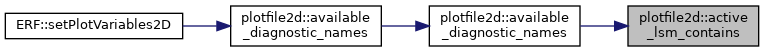
◆ available_diagnostic_names() [1/3]
| amrex::Vector< std::string > plotfile2d::available_diagnostic_names | ( | const SolverChoice & | solver_choice | ) |
Referenced by ERF::setPlotVariables2D().
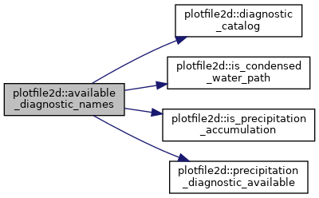
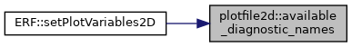
◆ available_diagnostic_names() [2/3]
| amrex::Vector< std::string > plotfile2d::available_diagnostic_names | ( | const SolverChoice & | solver_choice, |
| bool | has_surface_layer | ||
| ) |
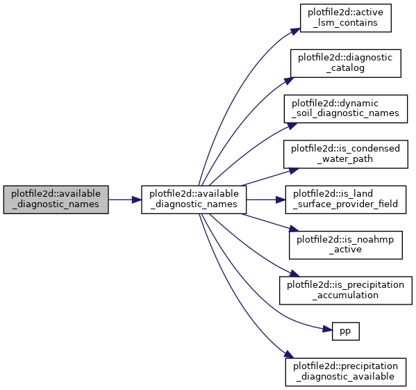
◆ available_diagnostic_names() [3/3]
| amrex::Vector< std::string > plotfile2d::available_diagnostic_names | ( | const SolverChoice & | solver_choice, |
| bool | has_surface_layer, | ||
| const amrex::Vector< std::string > & | active_lsm_names | ||
| ) |
Referenced by available_diagnostic_names().
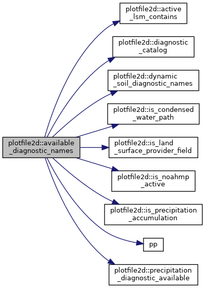
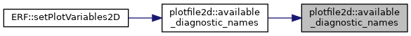
◆ available_sampled_field_names()
| amrex::Vector< std::string > plotfile2d::available_sampled_field_names | ( | const SolverChoice & | solver_choice | ) |
◆ build_sampled_level_output_descriptors()
| amrex::Vector< Plotfile2DOutputDescriptor > plotfile2d::build_sampled_level_output_descriptors | ( | const std::string & | pp_prefix, |
| int | which, | ||
| const amrex::Vector< std::string > & | static_plot_vars, | ||
| const SolverChoice & | solver_choice | ||
| ) |
Referenced by ERF::Write2DPlotFile().
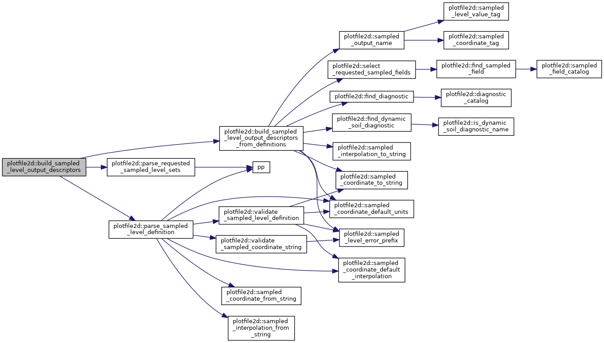
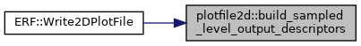
◆ build_sampled_level_output_descriptors_from_definitions()
| amrex::Vector< Plotfile2DOutputDescriptor > plotfile2d::build_sampled_level_output_descriptors_from_definitions | ( | const amrex::Vector< SampledLevelDefinition > & | level_sets, |
| const amrex::Vector< std::string > & | static_plot_vars, | ||
| const SolverChoice & | solver_choice | ||
| ) |
Referenced by build_sampled_level_output_descriptors().
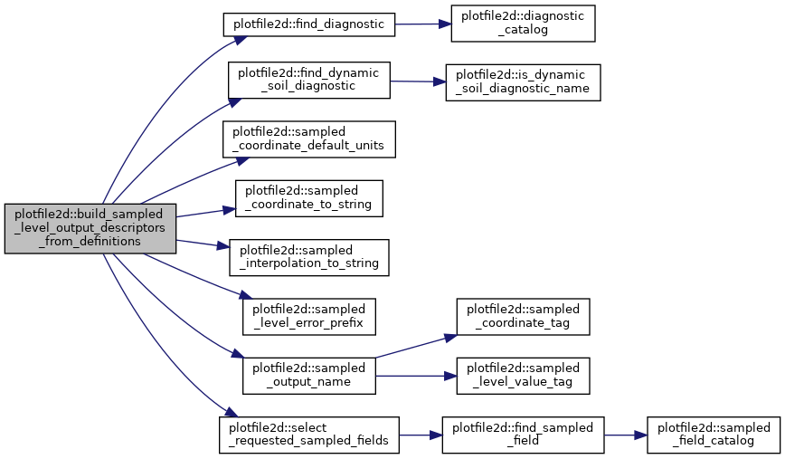
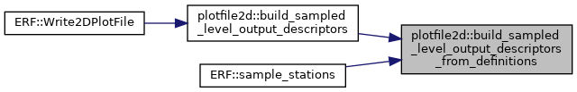
◆ diagnostic_catalog()
| const amrex::Vector< DiagnosticDescriptor > & plotfile2d::diagnostic_catalog | ( | ) |
Referenced by available_diagnostic_names(), diagnostic_names(), and find_diagnostic().
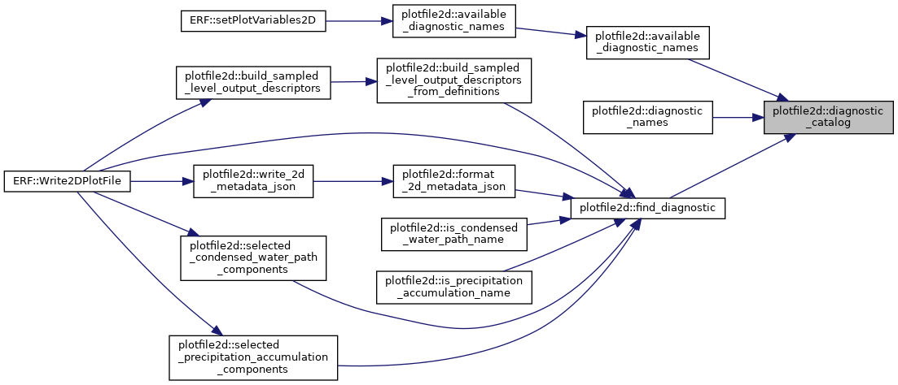
◆ diagnostic_category_to_string()
|
noexcept |
◆ diagnostic_names()
| amrex::Vector< std::string > plotfile2d::diagnostic_names | ( | ) |
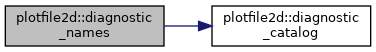
◆ dynamic_soil_diagnostic_names() [1/2]
| amrex::Vector< std::string > plotfile2d::dynamic_soil_diagnostic_names | ( | const amrex::Vector< std::string > & | active_lsm_names | ) |
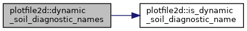
◆ dynamic_soil_diagnostic_names() [2/2]
| amrex::Vector< std::string > plotfile2d::dynamic_soil_diagnostic_names | ( | int | nsoil | ) |
Referenced by available_diagnostic_names().
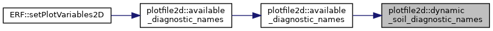
◆ escape_json_string()
| std::string plotfile2d::escape_json_string | ( | const std::string & | value | ) |
◆ fill_component_from_klevel() [1/2]
| void plotfile2d::fill_component_from_klevel | ( | amrex::MultiFab & | dst, |
| int | dst_comp, | ||
| const amrex::MultiFab & | src, | ||
| int | src_k, | ||
| int | src_comp = 0 |
||
| ) |
◆ fill_component_from_klevel() [2/2]
| void plotfile2d::fill_component_from_klevel | ( | MultiFab & | dst, |
| int | dst_comp, | ||
| const MultiFab & | src, | ||
| int | src_k, | ||
| int | src_comp | ||
| ) |
Referenced by fill_component_from_klevel_or_value().
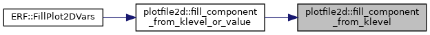
◆ fill_component_from_klevel_or_value() [1/2]
| void plotfile2d::fill_component_from_klevel_or_value | ( | amrex::MultiFab & | dst, |
| int | dst_comp, | ||
| const amrex::MultiFab * | src, | ||
| int | src_k, | ||
| amrex::Real | missing_value, | ||
| int | src_comp = 0 |
||
| ) |
◆ fill_component_from_klevel_or_value() [2/2]
| void plotfile2d::fill_component_from_klevel_or_value | ( | MultiFab & | dst, |
| int | dst_comp, | ||
| const MultiFab * | src, | ||
| int | src_k, | ||
| Real | missing_value, | ||
| int | src_comp | ||
| ) |
Referenced by ERF::Write2DPlotFile().
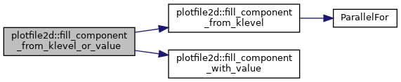
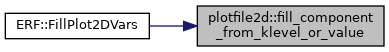
◆ fill_component_with_value() [1/2]
| void plotfile2d::fill_component_with_value | ( | amrex::MultiFab & | dst, |
| int | dst_comp, | ||
| amrex::Real | value | ||
| ) |
◆ fill_component_with_value() [2/2]
| void plotfile2d::fill_component_with_value | ( | MultiFab & | dst, |
| int | dst_comp, | ||
| Real | value | ||
| ) |
Referenced by fill_component_from_klevel_or_value(), fill_land_surface_component_from_klevel_or_missing(), fill_latent_heat_flux_from_klevel_or_missing(), fill_sampled_level_component(), and fill_sensible_heat_flux_from_klevel_or_missing().
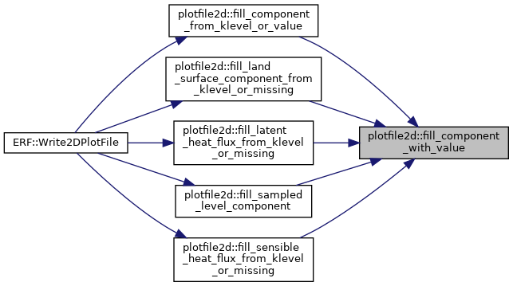
◆ fill_condensed_water_paths() [1/2]
| void plotfile2d::fill_condensed_water_paths | ( | amrex::MultiFab & | dst, |
| const amrex::MultiFab & | cons, | ||
| const SelectedWaterPathComponents & | selected, | ||
| const amrex::Geometry & | geom, | ||
| const amrex::MultiFab & | detJ | ||
| ) |
◆ fill_condensed_water_paths() [2/2]
| void plotfile2d::fill_condensed_water_paths | ( | MultiFab & | dst, |
| const MultiFab & | cons, | ||
| const SelectedWaterPathComponents & | selected, | ||
| const Geometry & | geom, | ||
| const MultiFab & | detJ | ||
| ) |
Referenced by ERF::Write2DPlotFile().
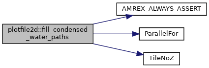
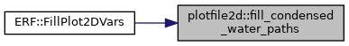
◆ fill_land_surface_component_from_klevel_or_missing() [1/2]
| void plotfile2d::fill_land_surface_component_from_klevel_or_missing | ( | amrex::MultiFab & | dst, |
| int | dst_comp, | ||
| const amrex::MultiFab * | src, | ||
| int | src_k, | ||
| amrex::Real | missing_value | ||
| ) |
◆ fill_land_surface_component_from_klevel_or_missing() [2/2]
| void plotfile2d::fill_land_surface_component_from_klevel_or_missing | ( | MultiFab & | dst, |
| int | dst_comp, | ||
| const MultiFab * | src, | ||
| int | src_k, | ||
| Real | missing_value | ||
| ) |
Referenced by ERF::Write2DPlotFile().
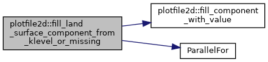
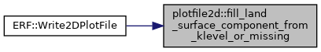
◆ fill_latent_heat_flux_from_klevel_or_missing() [1/2]
| void plotfile2d::fill_latent_heat_flux_from_klevel_or_missing | ( | amrex::MultiFab & | dst, |
| int | dst_comp, | ||
| const amrex::MultiFab * | src, | ||
| int | src_k, | ||
| amrex::Real | missing_value | ||
| ) |
◆ fill_latent_heat_flux_from_klevel_or_missing() [2/2]
| void plotfile2d::fill_latent_heat_flux_from_klevel_or_missing | ( | MultiFab & | dst, |
| int | dst_comp, | ||
| const MultiFab * | src, | ||
| int | src_k, | ||
| Real | missing_value | ||
| ) |
Referenced by ERF::Write2DPlotFile().
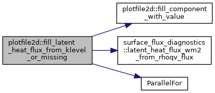
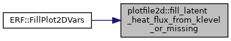
◆ fill_precipitation_accumulations() [1/2]
| void plotfile2d::fill_precipitation_accumulations | ( | amrex::MultiFab & | dst, |
| const SurfacePrecipAccumulationSources & | sources, | ||
| const SelectedSurfacePrecipAccumulationComponents & | selected, | ||
| const int | klo | ||
| ) |
◆ fill_precipitation_accumulations() [2/2]
| void plotfile2d::fill_precipitation_accumulations | ( | MultiFab & | dst, |
| const SurfacePrecipAccumulationSources & | sources, | ||
| const SelectedSurfacePrecipAccumulationComponents & | selected, | ||
| const int | klo | ||
| ) |
Referenced by ERF::Write2DPlotFile().
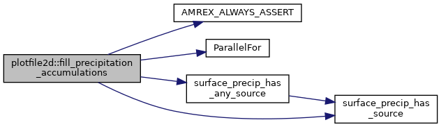
◆ fill_sampled_level_component() [1/2]
| void plotfile2d::fill_sampled_level_component | ( | amrex::MultiFab & | dst, |
| int | dst_comp, | ||
| const Plotfile2DOutputDescriptor & | descriptor, | ||
| const amrex::MultiFab & | cons, | ||
| const amrex::MultiFab * | z_phys_cc, | ||
| const amrex::MultiFab & | z_phys_nd, | ||
| bool | have_z_phys_cc, | ||
| const MoistureComponentIndices & | moisture_indices, | ||
| int | klo, | ||
| int | khi, | ||
| const SampledWindSources & | wind_sources = {} |
||
| ) |
◆ fill_sampled_level_component() [2/2]
| void plotfile2d::fill_sampled_level_component | ( | MultiFab & | dst, |
| int | dst_comp, | ||
| const Plotfile2DOutputDescriptor & | descriptor, | ||
| const MultiFab & | cons, | ||
| const MultiFab * | z_phys_cc, | ||
| const MultiFab & | z_phys_nd, | ||
| bool | have_z_phys_cc, | ||
| const MoistureComponentIndices & | moisture_indices, | ||
| int | klo, | ||
| int | khi, | ||
| const SampledWindSources & | wind_sources | ||
| ) |
Referenced by ERF::Write2DPlotFile().
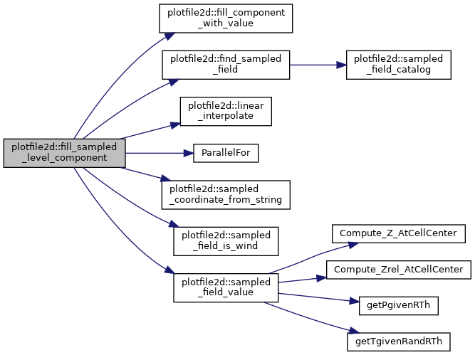
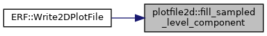
◆ fill_sensible_heat_flux_from_klevel_or_missing() [1/2]
| void plotfile2d::fill_sensible_heat_flux_from_klevel_or_missing | ( | amrex::MultiFab & | dst, |
| int | dst_comp, | ||
| const amrex::MultiFab * | src, | ||
| int | src_k, | ||
| amrex::Real | missing_value | ||
| ) |
◆ fill_sensible_heat_flux_from_klevel_or_missing() [2/2]
| void plotfile2d::fill_sensible_heat_flux_from_klevel_or_missing | ( | MultiFab & | dst, |
| int | dst_comp, | ||
| const MultiFab * | src, | ||
| int | src_k, | ||
| Real | missing_value | ||
| ) |
Referenced by ERF::Write2DPlotFile().
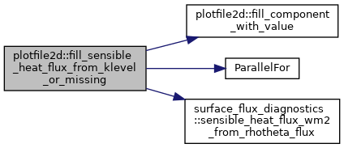
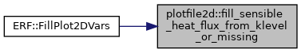
◆ find_diagnostic()
| const DiagnosticDescriptor * plotfile2d::find_diagnostic | ( | const std::string & | name | ) |
Referenced by build_sampled_level_output_descriptors_from_definitions(), format_2d_metadata_json(), is_condensed_water_path_name(), is_precipitation_accumulation_name(), selected_condensed_water_path_components(), selected_precipitation_accumulation_components(), and ERF::Write2DPlotFile().
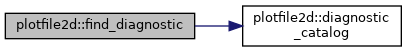
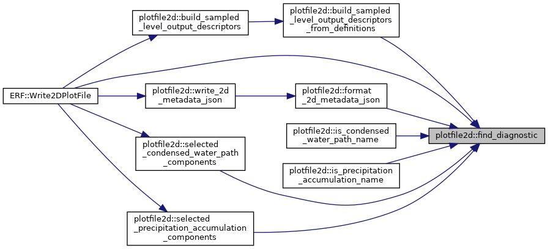
◆ find_dynamic_soil_diagnostic()
| const DiagnosticDescriptor * plotfile2d::find_dynamic_soil_diagnostic | ( | const std::string & | name | ) |
Referenced by build_sampled_level_output_descriptors_from_definitions(), format_2d_metadata_json(), and ERF::Write2DPlotFile().
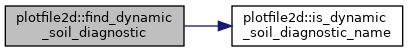
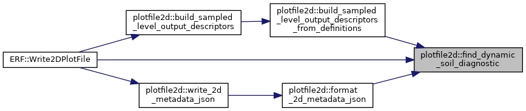
◆ find_sampled_field()
| const SampledFieldDescriptor * plotfile2d::find_sampled_field | ( | const std::string & | name | ) |
Referenced by fill_sampled_level_component(), and select_requested_sampled_fields().
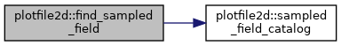
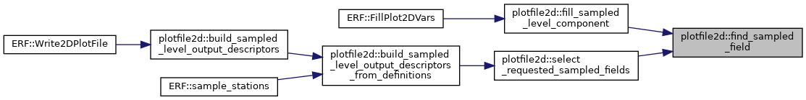
◆ format_2d_component_count_error()
| std::string plotfile2d::format_2d_component_count_error | ( | int | lev, |
| int | filled, | ||
| int | expected | ||
| ) |
◆ format_2d_metadata_json() [1/2]
| std::string plotfile2d::format_2d_metadata_json | ( | const amrex::Vector< Plotfile2DOutputDescriptor > & | descriptors | ) |
◆ format_2d_metadata_json() [2/2]
| std::string plotfile2d::format_2d_metadata_json | ( | const amrex::Vector< std::string > & | varnames | ) |
Referenced by write_2d_metadata_json().
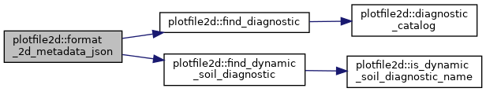
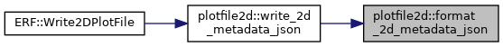
◆ format_invalid_2d_stream_error()
| std::string plotfile2d::format_invalid_2d_stream_error | ( | int | which | ) |
◆ format_plot2d_parameter_name()
| std::string plotfile2d::format_plot2d_parameter_name | ( | const std::string & | pp_prefix, |
| const std::string & | parameter_name | ||
| ) |
◆ format_unavailable_2d_plot_var_warning()
| std::string plotfile2d::format_unavailable_2d_plot_var_warning | ( | const std::string & | parameter_name, |
| const std::string & | unavailable_name, | ||
| const amrex::Vector< std::string > & | available_names | ||
| ) |
◆ is_condensed_water_path()
|
noexcept |
Referenced by available_diagnostic_names(), is_condensed_water_path_name(), and selected_condensed_water_path_components().
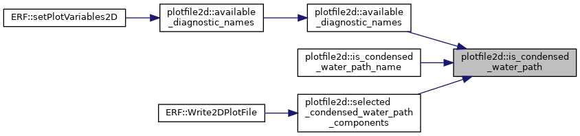
◆ is_condensed_water_path_name()
| bool plotfile2d::is_condensed_water_path_name | ( | const std::string & | name | ) |
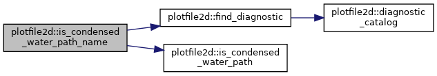
◆ is_dynamic_soil_diagnostic_name()
| bool plotfile2d::is_dynamic_soil_diagnostic_name | ( | const std::string & | name | ) |
Referenced by dynamic_soil_diagnostic_names(), and find_dynamic_soil_diagnostic().
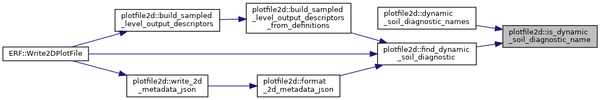
◆ is_land_surface_provider_field()
|
noexcept |
Referenced by available_diagnostic_names().
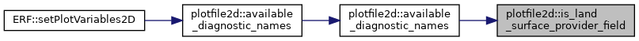
◆ is_noahmp_active()
|
noexcept |
Referenced by available_diagnostic_names().
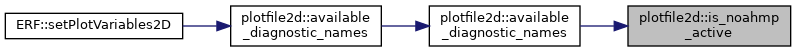
◆ is_precipitation_accumulation()
|
noexcept |
Referenced by available_diagnostic_names(), is_precipitation_accumulation_name(), and selected_precipitation_accumulation_components().
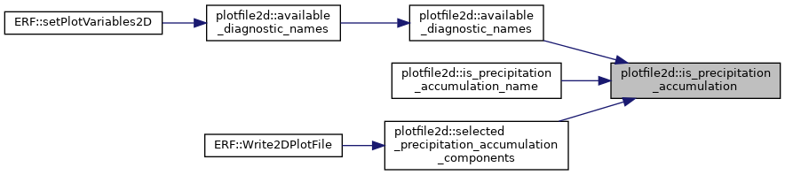
◆ is_precipitation_accumulation_name()
| bool plotfile2d::is_precipitation_accumulation_name | ( | const std::string & | name | ) |
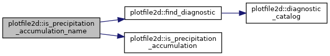
◆ linear_interpolate()
|
noexcept |
Referenced by fill_sampled_level_component().
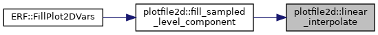
◆ metadata_json_filename()
| std::string plotfile2d::metadata_json_filename | ( | const std::string & | plotfilename | ) |
◆ missing_policy_to_string()
|
noexcept |
◆ missing_value_json()
| std::string plotfile2d::missing_value_json | ( | MissingPolicy | policy | ) |
◆ parse_requested_sampled_level_sets()
| amrex::Vector< std::string > plotfile2d::parse_requested_sampled_level_sets | ( | const std::string & | pp_prefix, |
| int | which | ||
| ) |
Referenced by build_sampled_level_output_descriptors().
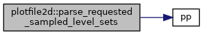
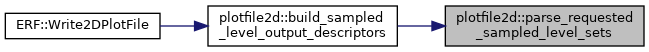
◆ parse_sampled_level_definition()
| SampledLevelDefinition plotfile2d::parse_sampled_level_definition | ( | const std::string & | level_set_name, |
| const std::string & | pp_prefix | ||
| ) |
Referenced by build_sampled_level_output_descriptors().
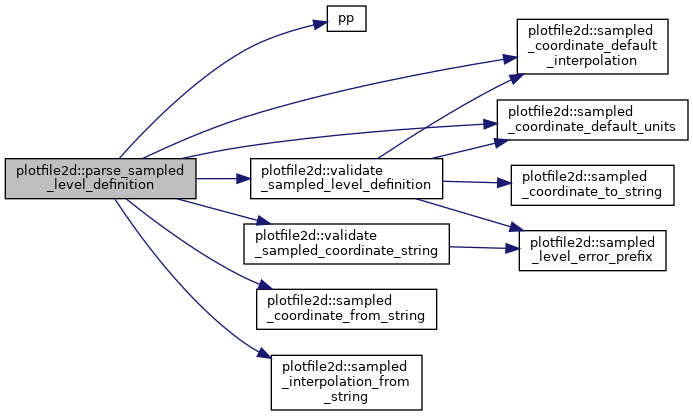
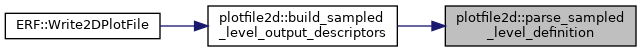
◆ precipitation_diagnostic_available()
|
noexcept |
◆ sampled_coordinate_default_interpolation()
|
noexcept |
Referenced by parse_sampled_level_definition(), and validate_sampled_level_definition().
◆ sampled_coordinate_default_units()
|
noexcept |
Referenced by build_sampled_level_output_descriptors_from_definitions(), parse_sampled_level_definition(), and validate_sampled_level_definition().
◆ sampled_coordinate_from_string()
| SampledCoordinate plotfile2d::sampled_coordinate_from_string | ( | const std::string & | value | ) |
Referenced by fill_sampled_level_component(), and parse_sampled_level_definition().
◆ sampled_coordinate_tag()
|
noexcept |
◆ sampled_coordinate_to_string()
|
noexcept |
Referenced by build_sampled_level_output_descriptors_from_definitions(), and validate_sampled_level_definition().
◆ sampled_field_catalog()
| const amrex::Vector< SampledFieldDescriptor > & plotfile2d::sampled_field_catalog | ( | ) |
Referenced by available_sampled_field_names(), and find_sampled_field().
◆ sampled_field_id_to_string()
| std::string plotfile2d::sampled_field_id_to_string | ( | SampledFieldID | field_id | ) |
◆ sampled_field_is_scalar_state()
|
noexcept |
◆ sampled_field_is_wind()
|
noexcept |
Referenced by fill_sampled_level_component(), and sampled_field_is_scalar_state().
◆ sampled_field_name()
|
inlinenoexcept |
◆ sampled_field_value()
|
noexcept |
Referenced by fill_sampled_level_component().
◆ sampled_interpolation_from_string()
| SampledInterpolation plotfile2d::sampled_interpolation_from_string | ( | const std::string & | value | ) |
◆ sampled_interpolation_to_string()
|
noexcept |
Referenced by build_sampled_level_output_descriptors_from_definitions().
◆ sampled_level_error_prefix()
| std::string plotfile2d::sampled_level_error_prefix | ( | const std::string & | level_set_name, |
| const std::string & | parameter_name | ||
| ) |
Referenced by build_sampled_level_output_descriptors_from_definitions(), validate_sampled_coordinate_string(), and validate_sampled_level_definition().
◆ sampled_level_value_tag()
| std::string plotfile2d::sampled_level_value_tag | ( | amrex::Real | value, |
| const std::string & | units | ||
| ) |
◆ sampled_output_name()
| std::string plotfile2d::sampled_output_name | ( | const std::string & | field_name, |
| SampledCoordinate | coordinate, | ||
| amrex::Real | value, | ||
| const std::string & | units | ||
| ) |
Referenced by build_sampled_level_output_descriptors_from_definitions().
◆ sampled_target_is_bracketed()
|
noexcept |
◆ select_requested_plot_variables()
| PlotVariableSelection plotfile2d::select_requested_plot_variables | ( | const amrex::Vector< std::string > & | requested, |
| const amrex::Vector< std::string > & | available | ||
| ) |
◆ select_requested_sampled_fields()
| SampledFieldSelection plotfile2d::select_requested_sampled_fields | ( | const amrex::Vector< std::string > & | requested, |
| const SolverChoice & | solver_choice | ||
| ) |
Referenced by build_sampled_level_output_descriptors_from_definitions().
◆ selected_condensed_water_path_components()
| SelectedWaterPathComponents plotfile2d::selected_condensed_water_path_components | ( | const amrex::Vector< std::string > & | plot_var_names, |
| const SolverChoice & | solver_choice | ||
| ) |
Referenced by ERF::Write2DPlotFile().
◆ selected_precipitation_accumulation_components()
| SelectedSurfacePrecipAccumulationComponents plotfile2d::selected_precipitation_accumulation_components | ( | const amrex::Vector< std::string > & | plot_var_names, |
| const SurfacePrecipAccumulationSources & | sources | ||
| ) |
Referenced by ERF::Write2DPlotFile().
◆ use_native_shoc_consumed_flux_source()
|
noexcept |
◆ validate_sampled_coordinate_string()
| std::string plotfile2d::validate_sampled_coordinate_string | ( | const std::string & | level_set_name, |
| const std::string & | value | ||
| ) |
Referenced by parse_sampled_level_definition().
◆ validate_sampled_level_definition()
| std::string plotfile2d::validate_sampled_level_definition | ( | const SampledLevelDefinition & | level_set | ) |
Referenced by parse_sampled_level_definition().
◆ write_2d_metadata_json() [1/2]
| void plotfile2d::write_2d_metadata_json | ( | const std::string & | plotfilename, |
| const amrex::Vector< Plotfile2DOutputDescriptor > & | descriptors | ||
| ) |
◆ write_2d_metadata_json() [2/2]
| void plotfile2d::write_2d_metadata_json | ( | const std::string & | plotfilename, |
| const amrex::Vector< std::string > & | varnames | ||
| ) |
Referenced by ERF::Write2DPlotFile().

Variable Documentation
◆ MaxCondensedWaterPathComponents
|
staticconstexpr |
Referenced by active_condensed_water_path_descriptors(), and fill_condensed_water_paths().
◆ MaxSurfacePrecipAccumulationComponents
|
staticconstexpr |
Referenced by fill_precipitation_accumulations().